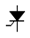
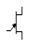
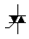
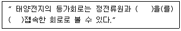
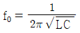
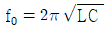
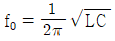
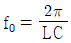

항로표지기사 (2012-08-26 기출문제)
1과목: 항로표지일반
1. 방위표지에 대한 설명으로 가장 적합한 것은?
- 통항항로의 좌현측 및 우현측을 표시한다.
- 나침의와 관련하여 항해자에게 가항수역을 표시한다.
- 수로중앙표지와 같이 전 주변이 가항수역임을 표시한다.
- 전 주변이 가항수역인 일정 규모의 고립장해물을 표시한다.
(정답률: 알수없음)

2. 항로표지의 기본요건 중 거리가 가장 먼 것은?
- 식별이 쉬워야 한다.
- 일정한 장소에 항상 고정되어 있어야 한다.
- 신뢰성이 있어야 한다.
- 높은 곳에 위치할수록 좋다.
(정답률: 알수없음)
3. 항정선을 평면위에 직선으로 표시하는 도법은?
- 점장도법
- 대권도법
- 다원추도법
- 평면도법
(정답률: 알수없음)
4. 등명암광의 약어는?
- FI
- LFI
- Oc
- Iso
(정답률: 82%)
5. 명호안에 암초나 암암 등이 있는 경우 이 위험구역을 표시하기 위하여 그 부분을 유색광으로 비추는 것을 무엇이라 하는가?
- 광망
- 분호
- 암호
- 섬광
(정답률: 알수없음)
6. 등표의 기초형식 선정에 있어서 고려되지 않는 것은?
- 지반의 강도
- 외력의 대소
- 시공성과 경제성
- 선박의 충격력
(정답률: 80%)
7. 항해 관련 용어의 설명으로 맞는 것은?
- 적도에 평행한 소권을 위도권이라 하고, 각 위도권은 극에 가까워질수록 작아진다.
- 두 지점을 지나는 거등권 사이의 자오선의 호를 변경이라 한다.
- 변경은 두 지점의 경도가 같은 부호이면 합을 구하면 된다.
- 두 지권 가운데 북쪽에 있는 것을 동지권, 남쪽에 있는 것을 하지권이라 한다.
(정답률: 알수없음)
8. 통항이 곤란한 협수로 상의 항로 연장선상에 전∙후 2개 또는 2개 이상의 표지시설을 설치하여 선박의 안전항행을 유도하는 항로표지는?
- 입표
- 도표
- 육표
- 설표
(정답률: 알수없음)
9. 다음 중 특수신호표지에 속하지 않는 것은?
- 조류신호표지
- 선박통상신호표지
- 해양위성신호표지
- 자동위치식별신호표지
(정답률: 알수없음)
10. 10해리를 항해한 선박이 이동한 거리를 미터(m)로 환산하면 약 몇 미터(m)인가?
- 1709m
- 17093m
- 1852m
- 18520m
(정답률: 67%)
11. 점장도에 대한 설명으로 거리가 먼 것은?
- 경위도에 의한 위치표시는 직각좌표가 되어 사용하기가 쉽다.
- 항정선을 평면위에 직선으로 나타내기 위해 고안된 도법이다.
- 위도 1분의 눈금 길이와 해도 위의 위치에 따라 다르다.
- 위도가 높아짐에 따라 지형의 면적이 축소된다.
(정답률: 알수없음)
12. 해도의 개보에 대한 설명으로 거리가 가장 먼 것은?
- 새로운 자료에 의한 내용 정정 및 포함구역과 축척 등의 변경을 위해서 원판을 새로 만들어 내는 것을 개판(New edition)이라고 한다.
- 개판인 경우에는 종전에 발행하고 있던 해도를 폐판하고 해도번호를 바꾼다.
- 원판이 마멸되어 사용할 수 없을 때 원도에 의하여 다시 원판을 만드는 것을 재판(Reprint)라고 한다.
- 항해에 직접적인 관계가 없거나 적은 사항을 항행통보에 기재하기 않고 직접 원판에서 개보하는 것을 보도(Supplement)라고 한다.
(정답률: 64%)
13. 항로표지의 운영에 대한 기준으로 거리가 가장 먼 것은?
- 광파표지는 일몰시에 점등하고 일출시에 소등한다.
- 레이더 비콘은 안개로 인하여 시정이 5해리 이하일 때 운영한다.
- 음파표지는 눈, 비, 안개 등으로 시정이 1.5해리 이하일 때 주∙야간 취명한다.
- 전파표지는 기상변화와 관계없이 24시간 계속 운영한다.
(정답률: 60%)
14. 주변수역이 가항수역임을 표시하는 표지로 홍색구형 두표가 부착된 것은?
- 방위표지
- 우현표지
- 안전수역표지
- 고립장해표지
(정답률: 알수없음)
15. IALA 해상부표식에서 A지역과 B지역이 서로 다르게 적용하는 표지는?
- 방위표지
- 측방표지
- 고립장해표지
- 안전수역표지
(정답률: 60%)
16. 항로표지로 오인될 우려가 있는 행위를 하지 않도록 법으로 제한한 내용은?
- 공사 시행의 제한
- 식물 식재에 관한 사항
- 선박의 접근 항행 제한
- 등화 등의 제한
(정답률: 알수없음)
17. 여수항으로 입항중인 선박이 항 입구에서 상부황색 하부흑색으로 도색된 등표를 발견하였다. 이 등표는 어느 방위 표지인가?
- 남방위표지
- 북방위표지
- 동방위표지
- 서방위표지
(정답률: 알수없음)
18. 수면하의 암초, 수면위의 암초, 방파제 끝단 등을 조사하여 통항선박에 그들 장애물의 소재를 알리기 위하여 설치된 투광기는?
- 도등
- 지향등
- 교량등
- 조사등
(정답률: 알수없음)
19. 규정된 등질의 부호와 전구의 직류전압을 제어하고 동작중인 전구의 고장 상태를 감시하여 전구교환기에 제어신호를 보내고 일광제어기의 제어 신호를 받아 전구를 점등시키는 장치는?
- 충전 조절기
- 전압조정기
- 섬광기
- 태양전지
(정답률: 80%)
20. 항로표지에 대한 설명으로 거리가 가장 먼 것은?
- 국토해양부장관이 설치한다.
- 국토해양부장관 이외의 자도 허가를 받아 설치할 수 있다.
- 법으로 정해진 항로에만 설치할 수 있다.
- 항해하는 선박의 지표가 되는 시설이다.
(정답률: 알수없음)
2과목: 전기·전자기초
21. 다음 중 반도체 스위칭 소자 중 SCR을 나타내는 기호는?



(정답률: 알수없음)
22. 다음 중 직류발전기의 종류가 아닌 것은?
- 분권발전기
- 직권발전기
- 복권발전기
- 단권발전기
(정답률: 64%)
23. 연축전지 취급시 일반적인 주의사항이 아닌 것은?
- 축전지의 단자 및 윗면은 항상 청결하게 유지한다.
- 축전기를 위로 올리거나 운반할 때에는 전조의 아랫부분을 들어야 한다.
- 전해액이 감소한 경우에는 황산을 보충한다.
- 축전지 근방에 화기를 주의한다.
(정답률: 알수없음)
24. 멀티테스터라도고 하며 직류 전압 및 전류, 교류전압, 저항을 측정할 수 있는 것은?
- 회로시험기
- 휘스톤 브리지
- 절연저항계
- 캘빈 브리지
(정답률: 65%)
25. 250회 감은 코일에 통과하는 자속이 0.5초간에 0.3[Wb] 변화된다면 유도기전력[V]의 크기는?
- 100
- 150
- 200
- 250
(정답률: 알수없음)
26. 3상 Y결전에서 선간 전압기 173.2[V]일 때 상 전압은 약 몇[V]인가?
- 100
- 150
- 200
- 300
(정답률: 64%)
27. 다음 중 동일한 다이오드를 병렬로 연결하여 사용하면?
- 역전압을 크게 할 수 있다.
- 순방향 전류를 증가시킬 수 있다.
- 전원 변압기로 사용 할 수 있다.
- 필터 회로가 불필요하게 된다.
(정답률: 알수없음)
28. 다음 중 도체의 저항 요인과 거리가 먼 것은?
- 온도
- 길이
- 단면적
- 도체의 모양
(정답률: 알수없음)
29. 다음 중 전동기의 원리와 관련 된 법칙은?
- 플레밍의 오른손 법칙
- 플레밍의 왼손 법칙
- 렌츠의 법칙
- 앙페르의 오른나사 법칙
(정답률: 67%)
30. 직류전원 공급 장치의 구성 순서가 바르게 나열된 것은?
- 전원변압기 → 정류기 → 필터 → 정전압 회로
- 필터 → 정전압 회로 → 정류기 → 전원변압기
- 정류기 → 정전압 회로 → 필터 → 전원변압기
- 정전압 회로 → 필터 → 정류기 → 전원변압기
(정답률: 55%)
31. 정류기와 축전지를 부하에 병렬로 접속하고 축전지의 방전을 계속 보충하면서 부하에 전력을 공급하는 충전방식은?
- 보통충전
- 과부화충전
- 세류충전
- 부동충전
(정답률: 64%)
32. 다음 중 ( )안에 알맞은 내용이 순서대로 적합한 것은?

- 다이오드, 직렬
- 다이오드, 병렬
- 저항, 직렬
- 저항, 병렬
(정답률: 알수없음)
33. 다음 중 R, L, C 직렬 공진 회로에서 공진주파수(f0)는?




(정답률: 알수없음)
34. 2[㎌]와 3[㎌]를 직렬접속 했을 때 합성 정전용량[㎌]은?
- 6
- 5
- 2.4
- 1.2
(정답률: 알수없음)
35. 평등 전장 10[V/m]의 전장 방향으로 10cm 떨어진 두 점사이의 전위차[V]는?
- 0.04
- 0.4
- 4
- 40
(정답률: 알수없음)
36. 다음 중 태양전지는 무슨 효과를 이용한 것인가?
- 방전효과
- 홀표과
- 광증폭효과
- 광기전력효과
(정답률: 84%)
37. 직류발전기의 병렬운전에 있어 균압선을 설치하는 주목적은?
- 안정된 운전을 위하여
- 손실을 경감하기 위하여
- 진동이나 소리를 방지하기 위하여
- 고조파의 발생을 방지하기 위하여
(정답률: 55%)
38. 다음 중 디지털 계측기의 장점과 거리가 먼 것은?
- 측정값의 저장, 연산이 용이하다.
- 측정값의 정확도를 유지할 수 있다.
- 측정 오차가 적다.
- 온도의 영향을 받지 않는다.
(정답률: 80%)
39. 대칭 3상 교류에서 사용하는 결선법이 아닌 것은?
- Y결선
- Δ결선
- V결선
- K결선
(정답률: 87%)
40. 다음 중 직류전원을 교류전원으로 변환하는 장치는?
- 인버터
- 초퍼
- 컨버터
- 변압기
(정답률: 84%)
3과목: 광파·음파표지
41. 변침점이나 항로의 폭을 표시하기 위하여 항만에 설치하는 대표적인 유도표지는?
- 등부표
- 교량표
- 등대
- 입표
(정답률: 알수없음)
42. 광파표지의 기본요건으로 적합하지 않은 것은?
- 요구되는 범위 내에서 충분히 볼 수 있을 것
- 강력한 광력을 유지할 것
- 섬광과 암간이 항해자가 쉽게 식별할 수 있는 속도록 정확히 반복될 것
- 등명기 및 광원은 신뢰성이 높을 것
(정답률: 알수없음)
43. 광달거리를 계산할 때 IALA에서 권고하는 기상학적 표준시정은?
- 10해리
- 11해리
- 12해리
- 13해리
(정답률: 73%)
44. 해안에 돌출한 곶, 섬, 방파제 등 선박의 항해목표가 되는 위치에 건설하는 대표적인 항로표지는?
- 등대
- 무신호
- 도등
- 지향등
(정답률: 알수없음)
45. 자연광은 진행 방향과 수직인 평면상에서 진동하는 횡파인데 진동이 항상 일정한 방향으로만 나타나는 빛은?
- 편광
- 회절
- 굴절
- 간섭
(정답률: 알수없음)
46. 등표나 등부표의 설치가 곤란한 곳에 주변의 등탑 등에 강력한 투광기를 달아서 그 구역을 비춰서 위험을 표시하는 등화장치가 아닌 것은?
- 조사등
- 유도등
- 분호등
- 부등
(정답률: 50%)
47. 빛이 보이지 않는 상태로부터 마치 보이는 세기로 되는 경계의 곳에서의 값을 무엇이라 하는가?
- 역치
- 눈부심
- 광도
- 투과율
(정답률: 알수없음)
48. 광달거리에 대한 설명으로 맞는 것은?
- 등화 표지로부터 빛이 도달하는 최단거리를 말한다.
- 항해자가 등광을 인식할 수 있는 최대거리를 말한다.
- 어떤 등화로부터 빛이 도달하는 중간거리를 말한다.
- 항해자가 등광을 인식할 수 있는 최단거리를 말한다.
(정답률: 알수없음)
49. 항로표지용으로 이용하는 섬광기의 조건으로 거리가 먼 것은?
- 넓은 범위의 섬광부호를 제어할 수 있어야하며, 사전 입력된 프로그램의 선택이 용이하여야 한다.
- 단락회로 및 역극성 보호회로가 설치되어야 한다.
- 전구의 수명을 최대화 하고 소비전력을 최소화하도록 제작 한다.
- 충격, 진동에 대한 고려는 크게 필요 없으나 내식성은 매우 중요하다.
(정답률: 알수없음)
50. 음파의 물리학적 성질과 거리가 먼 것은?
- 음파는 주파수가 높을수록 멀리까지 전파된다.
- 음파는 진행방향의 매질에 따라 회절, 굴절, 반사 및 흡수된다.
- 음파는 거리의 자승에 따라 감쇠 한다.
- 음파는 수면과의 마찰에 의하여 손실을 받는다.
(정답률: 알수없음)
51. 다음 중 음파표지의 무신호로 가장 적합한 주파수의 범위는?
- 10~200[Hz]
- 200~500[Hz]
- 500~1000[Hz]
- 1000~3000[Hz]
(정답률: 80%)
52. 일반적 대기온도에서 상층온도가 저온일 경우 지표에 가까울수록 음속은 어떻게 변화하는가?
- 음속이 커진다.
- 음속이 작아진다.
- 음속이 동일하다.
- 음속이 커졌다 작아진다.
(정답률: 85%)
53. 전자식으로 300~500[Hz] 저주파로서 음향을 발하는 무신호기는?
- 무종
- 모터사이렌
- 에어사이렌
- 전기혼
(정답률: 94%)
54. 등질에 대한 설명으로 거리가 먼 것은?
- 도등, 지향등에는 점멸광을 사용한다.
- 등질은 항로표지 식별을 위한 중요한 요소이다.
- 등질은 등색과 등광의 주기를 합한 넓은 의미이다.
- 해상부표식에서는 단일부동광을 사용할 수 없다.
(정답률: 60%)
55. 에너지의 양자화 개념을 도입하여 흑체의 표면에서 복사되는 분광복사 발산도를 파장과 온도와의 관계로서 표시한 법칙은?
- 빈의 복사법칙
- 스테판-볼츠만의 법칙
- 빈의 변위법칙
- 프랑크의 복사법칙
(정답률: 91%)
56. 다음 중 군섬광은?
- Mo(A)8s
- FI(4) 8s
- LFI 10s
- Q(6)+LFI, 15s
(정답률: 알수없음)
57. 지리학적 광달거리의 주요 요소가 아닌 것은?
- 지구의 곡률
- 대기굴절
- 표지등화 및 항해자(관측자)의 수면상의 눈높이
- 지구의 반경
(정답률: 알수없음)
58. IALA에서 권고한 항로표지 유효광도 계산식의 종류로 거리가 먼 것은?
- 슈미트-클라우센의 식
- 알라드 식
- 브론델-레이-더글라스 식
- 실효광도 측정 식
(정답률: 알수없음)
59. 다음 중 등명기의 상부 등체 부품이 아닌 것은?
- 렌즈
- 색 필터
- 항로표지용 전구
- 회전 장치
(정답률: 알수없음)
60. 진동수가 1000[Hz]이고 속도가 240m/s 인 소리의 파장은?
- 0.24m
- 0.64m
- 1.36m
- 2.14m
(정답률: 82%)
4과목: 전파표지 및 시스템이용
61. 다음 중 GPS 측위오차의 원인이 아닌 것은?
- 위성궤도 정보 오차
- 위성시계 오차
- 전리층 전파 오차
- 전파회절 오차
(정답률: 59%)
62. 다음 중 발생주기가 불규칙하여 고정통신에 부적합한 전리층은?
- D층
- Es층
- E층
- F층
(정답률: 알수없음)
63. 다음 중 VHF 대역에서 통신 가능거리를 증가시키기 위한 방법으로 거리가 먼 것은?
- 지향성이 예리한 안테나를 사용한다.
- 안테나 높이를 높인다.
- 이득이 높은 안테나를 사용한다.
- 안테나의 방사각도를 높게 한다.
(정답률: 70%)
64. 중파대에 주로 사용되고 있는 λ/4 수직접지안테나의 방사효율은?
- 20%
- 25%
- 75%
- 80%
(정답률: 알수없음)
65. 마이크로웨이브 통신에서 잡음 방해의 개선방법으로 거리가 먼 것은?
- 인공잡음의 발생원에 필터 등을 삽입한다.
- 수신기에는 잡음 억제회로를 설치한다.
- 수신기의 실효대역폭을 넓게 한다.
- 안테나의 지향성을 예민하게 한다.
(정답률: 60%)
66. 현재 국내에 운용되고 있는 전파표지 시스템이 아닌 것은?(문제 오류로 가답안 발표시 3번으로 발표되었지만 확정답안 발표시 1, 3번이 정답처리 되었습니다. 여기서는 가답안인 3번을 누르시면 정답 처리 됩니다.)
- GPS
- Loran-C
- Loran-A
- DGPS
(정답률: 알수없음)
67. 다음 중 LORAN-C 시스템에 대한 설명으로 거리가 먼 것은?
- 독립하여 자체적으로 선위를 구할 수 없다.
- LORAN-C 수신기에 Blink가 표시될 때는 이용불가라는 표시이다.
- 선박에 송신장치가 필요하다.
- 비교적 이용범위가 넓고 이용이 간단하다.
(정답률: 50%)
68. 다음 중 맥스웰 방정식에 의한 전파의 성질이 아닌 것은?
- 전파는 균일한 매질 내에서는 일정한 속도로 직진한다.
- 전파는 진행 중 매질에 따라 주파수가 변한다.
- 전파는 서로 다른 매질의 경계면에서 일부가 반사되고, 투과한 전파는 굴절한다.
- 전파는 파원에서 멀어짐에 따라 진폭을 점차로 감소된다.
(정답률: 80%)
69. 선박통항신호고(VTS)에서 제공하는 정보제공서비스의 내용으로 가장 거리가 먼 것은?
- 수로지 상의 변경사항
- 항로표지의 이동사항
- 부유물의 발견사항
- 항만항로 상의 어업사항
(정답률: 알수없음)
70. 다음 중 안테나와 급전선 간에 정합을 하는 이유가 아닌 것은?
- 부정합 손실을 적게 한다.
- 최대전력을 전송하기 위함이다.
- 정재파비를 크게 한다.
- 급전선에서 손실증가를 방지한다.
(정답률: 알수없음)
71. 지표파의 전파 성질에 대한 설명으로 적합하지 않은 것은?
- 지표의 유전율이 클수록 감쇠를 적게 받는다.
- 주파수가 낮을수록 감쇠를 적게 받는다.
- 지표의 도전율이 클수록 감쇠를 적게 받는다.
- 수평편파 보다는 수직편파 쪽이 감쇠가 적다.
(정답률: 알수없음)
72. 다음 중 백색잡음(White noise)에 대한 설명으로 적합하지 않은 것은?
- 레일리 분포특성을 보인다.
- 열 잡음이 대표적인 예이다.
- 백색잡음은 신호에 더해지는 형태이다.
- 주파수 전 대역에 걸쳐 전력 스펙트럼 밀도가 거의 일정하다.
(정답률: 알수없음)
73. LORAN-C 체인 통제정수 및 허용치에 대한 설명으로 거리가 먼 것은?
- 시간차(TD)값이 표준ㅍ치와의 1시간 평균편차가 ±150ns 이내일 것
- ECD가 표준치와 평균 ECD의 편차가 ±1.5 μs이내일 것
- 최저첨두 출력은 표준치의 30%이상일 것
- 표준치와 전계강도의 편차가 -3dB 이상일 것
(정답률: 67%)
74. LORAN-C 통제운영에서 기선 상에 있지 않은 종국의 LORAN-C 감시용 수신기로부터의 정보를 이용한 기선 통제방법은?
- Alpha 통제
- Bravo 통제
- Charlie 통제
- Delta 통제
(정답률: 알수없음)
75. 전파의 잡음방해 개선책에 해당하지 않는 것은?
- 수신기의 실효대역폭을 가능한 크게한다.
- 안테나에 Notch Filter를 설치한다.
- 송신전력을 크게 한다.
- 안테나의 지향성을 예민하게 하여 이득을 높인다.
(정답률: 알수없음)
76. 다음 중 위성항법보정장치(DGPS)의 이용조건으로 적합하지 않은 것은?
- 동일 위성을 사용할 때만 이용 가능하다.
- 기준국에서의 거리가 멀수록 오차가 감소한다.
- 기준국 수신기용 안테나는 위치가 정확해야한다.
- 기준국과 이동국간의 거리가 최대 100마일 이내이어야 한다.
(정답률: 알수없음)
77. 차단주파수 이상의 교류는 용이하게 통과시키고 그 주파수 이하의 교류에 대하여 큰 감쇠를 주는 필터는?
- 저역통과필터(LPP)
- 고역통과필터(HPF)
- 대역통과필터(BPF)
- 대역소거필터(BEF)
(정답률: 알수없음)
78. GPS는 스펙트럼 확산 방식을 채용하고 있는데 그 특징이 아닌 것은?
- 잼(jam)을 사용할 수 있다.
- 간섭을 방지할 수 있다.
- 정보의 외부 유출 확률이 높다.
- 고정도의 거리 및 시각 측정이 가능하다.
(정답률: 알수없음)
79. 단파대 통신에서 주간보다 야간에 낮은 주파수를 사용하는 이유로 가장 타당한 것은?
- 전리층에서의 전파 흡수가 작으므로
- 주간보다 야간의 전자밀도가 낮으므로
- 주간보다 야간의 전자밀도가 커지므로
- 낮은 주파수가 전파의 직진성이 강하므로
(정답률: 82%)
80. GPS의 주된 오차에 해당되지 않는 것은?
- 보정 오차
- 전파경로 오차
- 이용자장치 오차
- 위성자체 오차
(정답률: 31%)